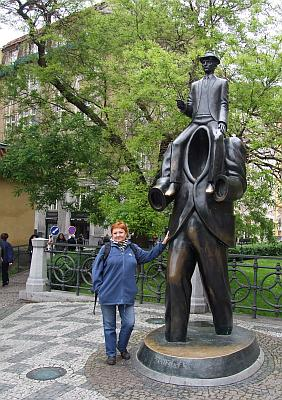

do aktualności
do aktualności2014-05-03
Ponieważ dzisiaj mamy koncert, to każdy sam decyduje jak spędzi czas do próby przed koncertem.
Małą grupą idziemy na spokojny spacer po Pradze bez przewodnika, ale z planem Pragi i dyrygentką, która go obsługuje :)

Idziemy zobaczyć słynne praskie zegary.
Po wysłuchaniu pięknych kurantów idziemy na obiad a potem na próbę.
Zaczynamy próbę w przepięknym Barokowym Refektarzu kościoła Św. Idziego.
Teraz chwila na przebranie się w stroje Cameraty i udajemy się na chór kościoła, gdzie będziemy oprawiać mszę.
Jesteśmy już na miejscu. Ależ ten chór jest wysoko! Ludzie na dole są jak laleczki.
Jesteśmy gotowi do muzycznej oprawy mszy.
Na mszy grał organista tej parafii, ale jak! Po naszym pięknym utworze „Zdrowaś Królewno Wyborna” miał być następny, ale organista zaczął grać – improwizować melodię zaśpiewanego przez nas utworu. Zrobił to tak pięknie i uroczyście, że dyrygentka podjęła decyzję o nie śpiewaniu następnego utworu, żeby pozostał ten wspaniały nastrój.
Po mszy schodzimy do refektarza, gdzie odbędzie się koncert 3 – majowy. Po koncercie rozmowy i pamiątkowe zdjęcia.
Na koncercie obecna była Konsul RP w Pradze: Marzena Krulak oraz proboszcz fr. Hieronim Kaczmarek.
Wracamy do hotelu, ponieważ pogoda mokra i zimna. W hotelu jesteśmy jedynymi gośćmi, więc robimy spotkanie niespodziankę dla naszych solenizantów i jubilatów połączone z zakończeniem pobytu w Pradze. Spotykamy się wszyscy w jadalni i super się bawimy (jak zawsze).
Mamy też gości, którzy przyjechali na nasz koncert, czyli dawna prezeska z mężem.
Przygrywają nam na cztery ręce Gosia i Andrzej, ale jak! Szkoda, że tego nie słyszycie.
A przy takiej muzyce, to tylko śpiewać i tańczyć.
A kto jest głównym tancerzem? Wiadomo - Marek! Że o paniach nie wspomnę.
do aktualności


 Prowadzenie strony: Małgorzata Wysocka-Cebula
Prowadzenie strony: Małgorzata Wysocka-Cebula